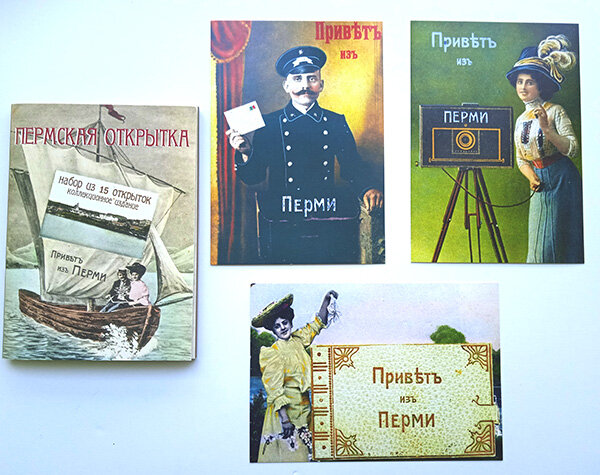
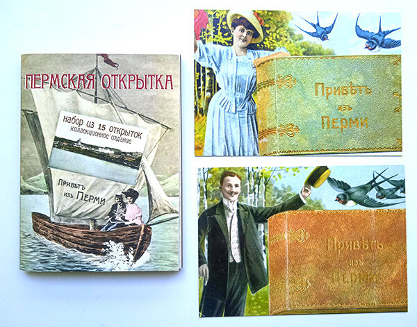
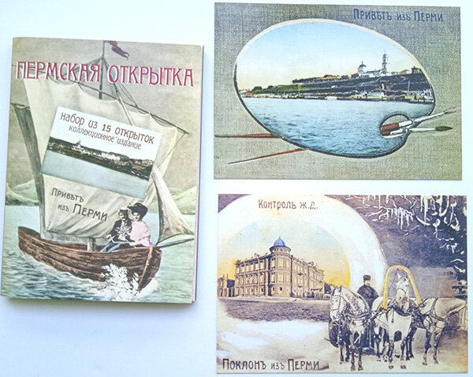
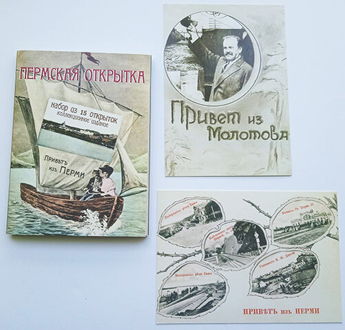
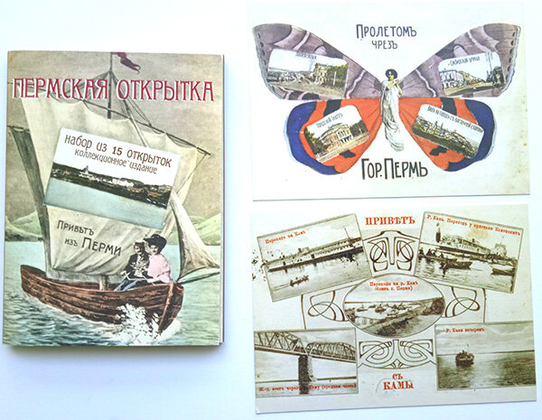
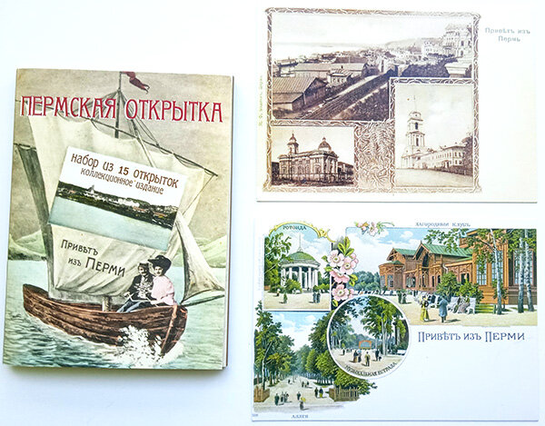
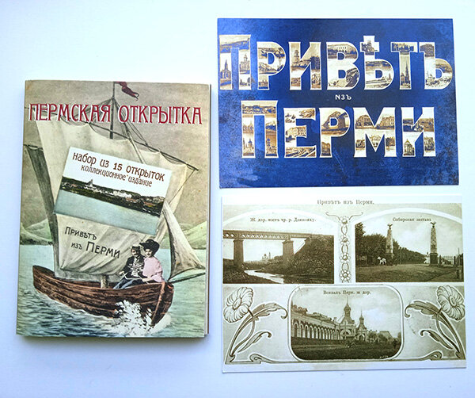

В конце XIX — начале XX века в обиход вошли особые почтовые открытки, получившие множество названий: «грюсы», «приветизы» и просто «приветы». Их прародителем считается берлинский издатель Йоханнес Мизлер, который первым выпустил открытку с надписью «Gruss aus…» (что в переводе с немецкого означает «Привет из…») и указанием места отправления.

Изначально такие открытки создавались как сувениры для состоятельных путешественников. Их изготавливали из качественной плотной бумаги, украшали изящными виньетками и декоративными шрифтами. Мастера применяли различные техники оформления: например, на некоторых открытках можно было встретить объёмные элементы — кожаные сумки почтальонов с мини-фотографиями внутри или фотоальбомы с открывающимися страницами.


Со временем популярность открыток росла, а их качество постепенно снижалось. От сложного модернового оформления с ангелочками и витиеватыми надписями перешли к более простому стилю. Печатать открытки стали массово, в том числе в Германии, а надписи добавляли уже на месте — в российских издательствах и фотоателье.

В начале XX века на открытках стали активно использовать технику коллажа. Это было связано с влиянием авангардного искусства того времени. На открытках можно встретить необычные композиции: бабочки с крыльями-фотографиями, ветки с листьями-снимками и многокадровые коллажи знаковых городских мест.

Пермь, расположенная на берегу Камы, также активно участвовала в производстве таких открыток. Местные издатели создавали фотоколлажи с видами города: рекой Камой, пароходами, мостами, вокзалами, храмами и местами отдыха горожан.

В России видовые открытки стали одним из самых популярных видов почтовых карточек начала XX века. Они давали возможность «путешествовать», не покидая родного города, и позволяли путешественникам делиться впечатлениями с близкими.
Традиция создания видовых открыток живёт и сегодня. Современное издательство «Лазурь» продолжает эту историческую линию, выпуская как собственные проекты открыток, так и выполняя заказы для различных клиентов. Благодаря современным технологиям печати и дизайну, современные открытки сохраняют лучшие традиции прошлого, привнося в них актуальные элементы и новые идеи.
Сегодня эти открытки представляют не только историческую, но и культурную ценность, позволяя нам заглянуть в прошлое и увидеть, как выглядели города сто лет назад. А современные издания помогают сохранить эту прекрасную традицию для будущих поколений.